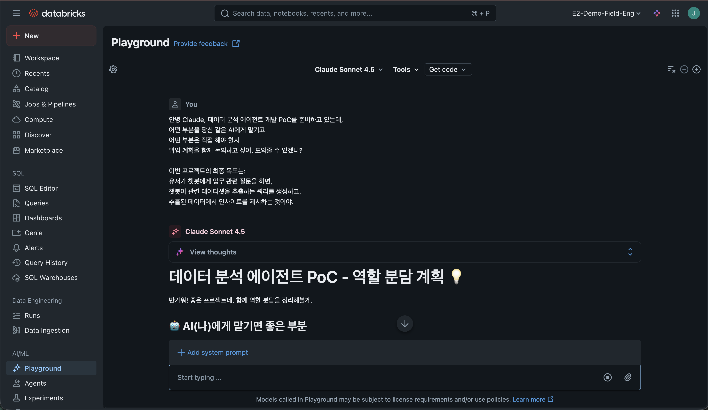

Section 01
AI Fluency & Vibe Coding 기초
Enable Your Vibe — AI-Powered Development Hands-on
15분 | 강의
AI와 효과적으로, 효율적으로, 윤리적으로, 안전하게 협업할 수 있는 능력
AI에게 무엇을 맡기고, 무엇은 직접 할 것인가?
AI에게 의도를 어떻게 명확히 전달할 것인가?
AI의 결과물을 어떻게 평가할 것인가?
AI를 윤리적이고 안전하게 사용하고 있는가?
나 혼자 • AI 혼자 • 함께 — 그리고 어떻게 분배할 것인가
문제 인식 —
목표와 성공 기준을 먼저 명확히 한다
플랫폼 인식 —
AI 시스템의 강점과 한계를 이해한다
작업 분배 —
사람 vs AI vs 협업, 전략적으로 배분한다
databricks console → Playground → Sonnet 4.5 선택
프롬프트 템플릿:
안녕 Claude, [작업 내용]을 준비하고 있는데,
어떤 부분을 당신 같은 AI에게 맡기고
어떤 부분은 직접 해야 할지
위임 계획을 함께 논의하고 싶어. 도와줄 수 있겠니?예시 (데이터 분석 에이전트 PoC):
안녕 Claude, 데이터 분석 에이전트 개발 PoC를 준비하고 있는데,
어떤 부분을 당신 같은 AI에게 맡기고
어떤 부분은 직접 해야 할지
위임 계획을 함께 논의하고 싶어. 도와줄 수 있겠니?
이번 프로젝트의 최종 목표는:
유저가 챗봇에게 업무 관련 질문을 하면,
챗봇이 관련 데이터셋을 추출하는 쿼리를 생성하고,
추출된 데이터에서 인사이트를 제시하는 것이야.Playground에서 Claude와 위임 계획을 논의하는 화면
작업을 설명하고, 질문하고, 맥락을 제공하고, 상호작용을 안내한다
무엇을 만들 것인가 —
원하는 결과물을 명확히 정의한다
어떻게 접근할 것인가 —
AI의 사고 과정을 안내한다
어떻게 행동할 것인가 —
AI의 행동 방식을 정의한다
Playground에서 부족한 프롬프트를 개선하는 연습
프롬프트:
목표: 프롬프트 Description에 대한 연습 경험
Context:
- 다음 항목들이 부족한 프롬프트를 작성해서 개선하는 것을 연습하려고 해
- Product description
- Process description
- Performance description
Desired output:
위의 컨텍스트 항목이 부족한 프롬프트
Process:
1. Claude가 부족한 프롬프트 예시를 작성한다.
2. 내가 부족한 부분을 개선해서 답변한다.
3. Claude가 개선한 부분에 대해서 평가해준다.Claude가 만든 부족한 프롬프트를 Product • Process • Performance 관점에서 개선해보세요
There's a new kind of coding I call 'vibe coding' where you fully give in to the vibes, embrace exponentials, and forget that the code even exists.
— Andrej Karpathy, OpenAI 창립 멤버, 2025년 2월
역할 전환: 코더 → 오케스트레이터
| 도구 | 방식 | 특징 | 4D 관점 |
|---|---|---|---|
| Copilot | 자동 완성 | 에디터 내 인라인 제안, Tab으로 수락 | 부분 위임, 수동 분별 |
| Cursor | 채팅 + 편집 | 멀티 파일 편집, Composer 모드 | 대화형 기술, 반자동 분별 |
| Claude Code | 에이전틱 | 터미널 기반, 자율적 도구 사용, MCP 확장 | 전면 위임, 체계적 책임 |
자동 완성 → 대화형 편집 → 자율적 에이전트
에이전틱 코딩 = AI가 도구를 사용하여 자율적으로 계획 → 실행 → 검증
200K 토큰 — 일반 코드베이스 전체를 한 번에 이해
파일 읽기/쓰기, 명령 실행, 검색까지 자율적으로 수행
Model Context Protocol을 통해 외부 서비스와 연동 — 무한 확장
사용자 승인 기반 실행, 자연스러운 한국어 프롬프트 지원
| 섹션 | 주제 | 시간 | 유형 |
|---|---|---|---|
| 01 | AI Foundation: AI Fluency & Vibe Coding 기초 | 15분 | 강의 |
| 02 | Claude Code Features: 핵심 기능 실습 | 20분 | 실습 |
| 03 | MCP Architecture: 도구 연동 아키텍처 | 20분 | 강의+실습 |
| 04 | Skills Ecosystem: 스킬 생태계 | 15분 | 강의+실습 |
| 05 | Genie MCP: AI 에이전트 연동 | 20분 | 실습 |
| 06 | Skills Workflow: 워크플로우 자동화 | 20분 | 실습 |
| 07 | AI Dev Kit: 개발 키트 활용 | 20분 | 실습 |
| 08 | Build UI: 인터페이스 구축 | 25분 | 실습 |
| 09 | Deploy to Databricks: 배포 | 25분 | 실습 |
총 약 3시간 — 기초부터 배포까지 전체 개발 워크플로우를 경험합니다
Section 02: Claude Code Features
Claude Code를 직접 설치하고, 핵심 기능을 실습합니다
질문이 있으신가요?